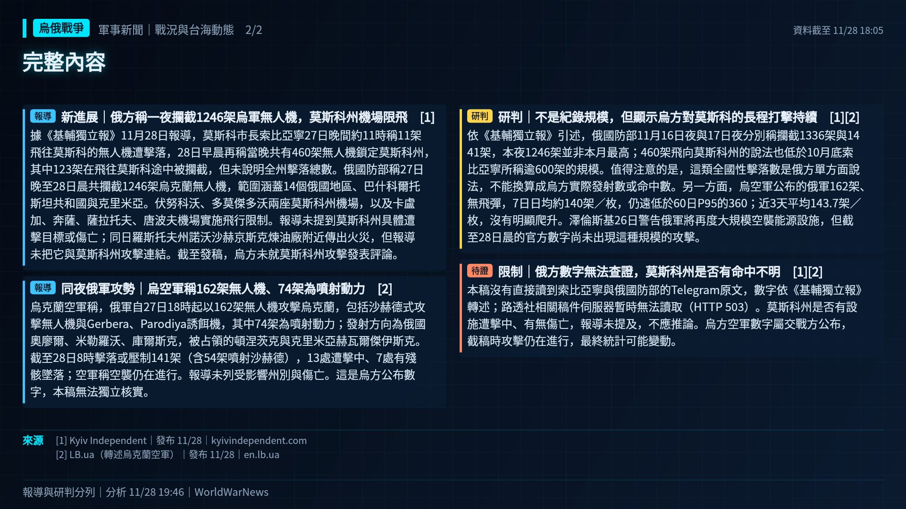
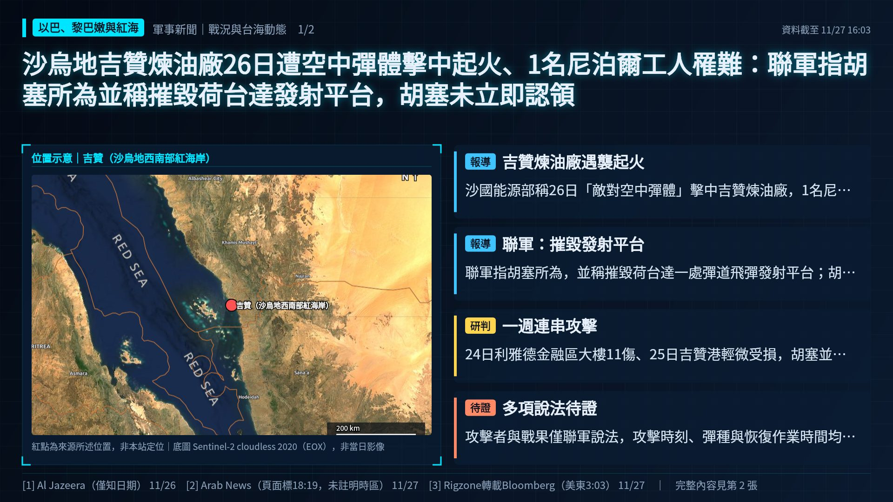
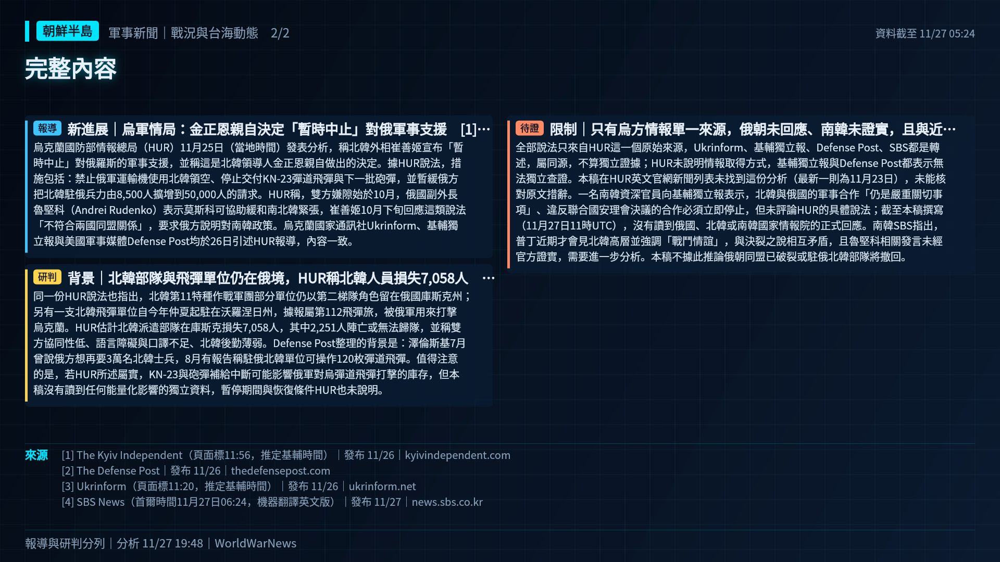
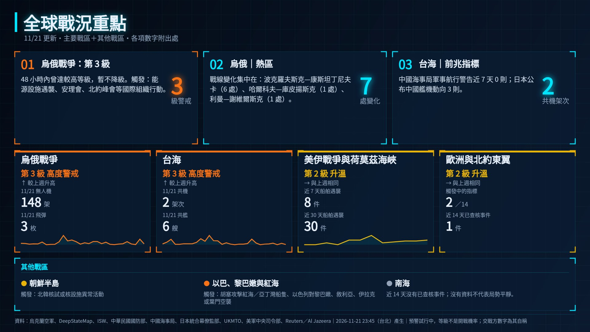
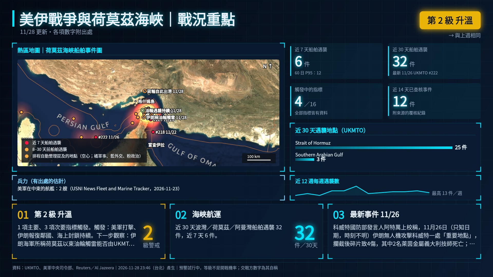
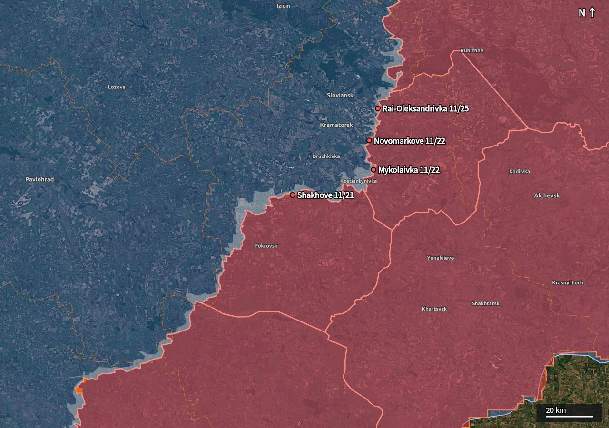

後備召集或動員法令
召集後備、延長役期或修改動員法，是開戰前最明確的準備動作之一。
報導標題：Russia is reviving Soviet-style “construction battalions” — conscripts and contract soldiers will be involved in buildin 來源 ↗
公開來源整理｜最後更新 2026-11-28 23:46（台北）｜每 3 小時更新，出事時加開
📌 11/28（六）每日摘要｜台海 3 級高度警戒：共機架次｜美伊 2 級升溫：美軍打擊或攔截行動｜歐洲北約 2 級升溫：波蘭／羅馬尼亞／波羅的海國家領空遭侵犯｜烏俄 2 級升溫：能源設施遭打擊比例上升｜朝鮮半島 1 級常態｜南海 1 級常態｜以巴紅海 2 級升溫：以色列對黎巴嫩、敘利亞、伊拉克或葉門空襲。降溫訊號：美伊、歐洲北約、烏俄。市場無異常波動。
2 項獨立主要指標觸發（4 項觸發，屬同一行動合併計為 2 項），且有官方或獨立來源
下一個觀察點：國防部共機、共艦是否回升至60日P95以上，九合一選後中共空飄氣球是否停止；閩航警等台海周邊軍事航行警告與日本統合幕僚監部公布的中國艦艇動向；巴士海峽與巴丹群島中國科研船與海警動態。
沒有指標超過門檻
沒有指標超過門檻
下一個觀察點：烏克蘭軍情局所稱北韓暫停對俄交付KN-23與砲彈，能否獲俄、朝或南韓國情院證實；俄軍彈道飛彈對烏打擊量是否變化；北韓是否再試射飛彈，韓美是否公布年底聯合演習。
沒有指標超過門檻
沒有指標超過門檻
🕊️ 有降溫訊號（見原因與來源）
1 項主要、3 項次要指標觸發
下一個觀察點：伊朗海軍所稱荷莫茲以東油輪觸雷能否由UKMTO或船東證實；美軍是否再對伊朗岸置飛彈陣地出手；伊朗對巴林、科威特的無人機攻擊是否持續；中央司令部每週護航運量與UKMTO週報通行艘次。
1 項主要、0 項次要指標觸發
下一個觀察點：吉贊煉油廠何時恢復作業、胡塞是否認領；胡塞是否續攻拉斯坦努拉、吉達港與舒蓋格電廠；聯軍對荷台達與沙那空襲是否升級；紅海商船遇襲的UKMTO通報。
🕊️ 有降溫訊號（見原因與來源）
1 項主要（2 項觸發，屬同一行動合併計為 1 項）、0 項次要指標觸發
下一個觀察點：澤倫斯基認領Sparta II攻擊後，芬蘭、愛沙尼亞政府是否正式回應或要求事前通報；烏方是否再於波羅的海打擊俄籍船隻；俄方是否加強芬蘭灣護航；愛沙尼亞12月1日關閉對俄口岸執行情形。
🕊️ 有降溫訊號（見原因與來源）
1 項主要、1 項次要指標觸發
下一個觀察點：烏方所稱薩瓦斯列伊卡5架MiG-31、Su-34受損能否由衛星影像或俄方證實；烏軍是否持續打擊伏爾加流域煉油廠及俄國內汽油限購擴大；俄軍是否以大規模飛彈空襲報復，空軍公布的7日日均是否回升。
等級依公開資料與固定規則計算（試行中），不是開戰機率。「無法判定」表示資料不足，不代表平靜。
近 7 天經 2 家以上媒體確認的事件，依類別分欄。
召集後備、延長役期或修改動員法，是開戰前最明確的準備動作之一。
報導標題：Russia is reviving Soviet-style “construction battalions” — conscripts and contract soldiers will be involved in buildin 來源 ↗
打擊黎巴嫩、敘利亞、伊拉克或葉門目標，衝突有擴大到多國的風險。
報導標題：Israeli security officials divided over timing of Iran strike as military operations continue in Lebanon 來源 ↗
打擊黎巴嫩、敘利亞、伊拉克或葉門目標，衝突有擴大到多國的風險。
報導標題：Israel claims strikes on Radwan Force camp, rocket launchers in south Lebanon 來源 ↗
召集後備、延長役期或修改動員法，是開戰前最明確的準備動作之一。
報導標題：Iran’s Regime Expands Basij Mobilization as Labor Protests Spread and Political Tensions Intensify 來源 ↗
新一輪制裁或出口管制，反映外交施壓升級。
報導標題：EU proposes sweeping new Russia sanctions targeting banks, crypto and sports events 來源 ↗
衝突雙方通話、會談或停火協商，可能讓緊張暫緩（不會降低燈號）。
報導標題：Sibiga: Ukraine is once again proposing a ceasefire in the Black Sea; Russia wants to include oil in the terms 來源 ↗
新一輪制裁或出口管制，反映外交施壓升級。
報導標題：European Commission proposes new sanctions on Russia targeting banks, crypto and sports events 來源 ↗
航空公司暫停飛往衝突地區，代表民間評估風險升高。
報導標題：Flights suspended or operations ceased: Five airlines hit by Iran war fuel shock 來源 ↗
衝突雙方通話、會談或停火協商，可能讓緊張暫緩（不會降低燈號）。
報導標題：Trump Updates NATO Chief On Putin Talks, Says Ukraine Peace Deal Could Come Quickly 來源 ↗
衝突雙方通話、會談或停火協商，可能讓緊張暫緩（不會降低燈號）。
報導標題：Araghchi: Qatar, Pakistan still mediating in Iran-US talks 來源 ↗
歐洲各國增加國防預算、恢復徵兵或發放民防手冊，反映對俄威脅的評估升高。
報導標題：Germany gives the green light to a record budget for 2027 and increases defense spending by 33% 來源 ↗
歐洲各國增加國防預算、恢復徵兵或發放民防手冊，反映對俄威脅的評估升高。
報導標題：Germany's 2027 budget would bring its largest defense spending ever—and near-record borrowing of €210.4 billion 來源 ↗
歐洲各國增加國防預算、恢復徵兵或發放民防手冊，反映對俄威脅的評估升高。
報導標題：Kubilius criticizes proposal to cut EU defense spending by 30% 來源 ↗
以新聞標題中最先出現的國家作為行動方，列出近 7 天的動作。
衝突雙方通話、會談或停火協商，可能讓緊張暫緩（不會降低燈號）。
報導標題：Pakistan, China advance fuel talks as US–Iran war disrupts Gulf supplies 來源 ↗
晶片、稀土等關鍵材料的出口管制，牽動台灣半導體供應鏈。
報導標題：Bessent says no further restrictions are needed for older Nvidia chips to China 來源 ↗
另有 2 則，見時間軸
晶片、稀土等關鍵材料的出口管制，牽動台灣半導體供應鏈。
報導標題：Nvidia, Dell and Supermicro Halt AI Server Shipments Amid New US Chip Export Controls 來源 ↗
衝突雙方通話、會談或停火協商，可能讓緊張暫緩（不會降低燈號）。
報導標題：Trump Updates NATO Chief On Putin Talks, Says Ukraine Peace Deal Could Come Quickly 來源 ↗
另有 11 則，見時間軸
召集後備、延長役期或修改動員法，是開戰前最明確的準備動作之一。
報導標題：Russia is reviving Soviet-style “construction battalions” — conscripts and contract soldiers will be involved in buildin 來源 ↗
新一輪制裁或出口管制，反映外交施壓升級。
報導標題：European Commission proposes new sanctions on Russia targeting banks, crypto and sports events 來源 ↗
另有 3 則，見時間軸
衝突雙方通話、會談或停火協商，可能讓緊張暫緩（不會降低燈號）。
報導標題：Sibiga: Ukraine is once again proposing a ceasefire in the Black Sea; Russia wants to include oil in the terms 來源 ↗
衝突雙方通話、會談或停火協商，可能讓緊張暫緩（不會降低燈號）。
報導標題：Ukraine, Russia, US and Europe could hold talks before Christmas 來源 ↗
新一輪制裁或出口管制，反映外交施壓升級。
報導標題：Zelensky says he’ll ask new U.S. Congress to tighten sanctions on Russia if Trump fails to secure peace deal by year’s e 來源 ↗
新一輪制裁或出口管制，反映外交施壓升級。
報導標題：Ukraine, new EU crackdown on Russia: sanctions on finance, crypto and sport 來源 ↗
另有 1 則，見時間軸
北韓以試射展示打擊能力，常與美韓演習或政治時間點相關；日本、南韓會同步發布警報與軌跡。
報導標題：North Korea confirms test of 'hypersonic missile' 來源 ↗
召集後備、延長役期或修改動員法，是開戰前最明確的準備動作之一。
報導標題：Iran’s Regime Expands Basij Mobilization as Labor Protests Spread and Political Tensions Intensify 來源 ↗
航空公司暫停飛往衝突地區，代表民間評估風險升高。
報導標題：Flights suspended or operations ceased: Five airlines hit by Iran war fuel shock 來源 ↗
衝突雙方通話、會談或停火協商，可能讓緊張暫緩（不會降低燈號）。
報導標題：Araghchi: Qatar, Pakistan still mediating in Iran-US talks 來源 ↗
另有 5 則，見時間軸
打擊黎巴嫩、敘利亞、伊拉克或葉門目標，衝突有擴大到多國的風險。
報導標題：Israeli security officials divided over timing of Iran strike as military operations continue in Lebanon 來源 ↗
打擊黎巴嫩、敘利亞、伊拉克或葉門目標，衝突有擴大到多國的風險。
報導標題：Israel claims strikes on Radwan Force camp, rocket launchers in south Lebanon 來源 ↗
打擊黎巴嫩、敘利亞、伊拉克或葉門目標，衝突有擴大到多國的風險。
報導標題：Israel Steps Up Strikes Across Southern Lebanon, Home Destruction Surges 來源 ↗
打擊黎巴嫩、敘利亞、伊拉克或葉門目標，衝突有擴大到多國的風險。
報導標題：Israeli Airstrikes and Explosions in Southern Lebanon as Drones Fly Over Beirut and Its Suburbs 來源 ↗
新一輪制裁或出口管制，反映外交施壓升級。
報導標題：EU proposes sweeping new Russia sanctions targeting banks, crypto and sports events 來源 ↗
歐洲各國增加國防預算、恢復徵兵或發放民防手冊，反映對俄威脅的評估升高。
報導標題：Germany gives the green light to a record budget for 2027 and increases defense spending by 33% 來源 ↗
另有 17 則，見時間軸
已知項目未觸發（7/7 項有資料）
已知項目未觸發（8/9 項有資料）
已知項目未觸發（6/6 項有資料）
已知項目未觸發（4/4 項有資料）
已知項目未觸發（1/1 項有資料）
已知項目未觸發（5/5 項有資料）
已知項目未觸發（2/2 項有資料）
已知項目未觸發（5/5 項有資料）
🕊️ 11/27 7 家媒體報導降溫訊號（通話、會談、停火）：Araghchi: Qatar, Pakistan still mediating in Iran-US
已知項目未觸發（3/3 項有資料）
已知項目未觸發（4/4 項有資料）
已知項目未觸發（1/1 項有資料）
已知項目未觸發（6/6 項有資料）
🕊️ 11/27 2 家媒體報導降溫訊號（通話、會談、停火）：Trump Updates NATO Chief On Putin Talks, Says Ukrain
已知項目未觸發（1/1 項有資料）
已知項目未觸發（5/5 項有資料）
🕊️ 11/28 18 家媒體報導降溫訊號（通話、會談、停火）：Sibiga: Ukraine is once again proposing a ceasefire
已知項目未觸發（1/1 項有資料）
依據：Yonhap（Korea Times 轉載）、Yonhap（Korea Times 轉載）、Yonhap（Korea Times 轉載）｜本站自行整理，非全文翻譯
依據：The Manila Times、The Filipino Times、The Manila Times、Canadian Inquirer｜本站自行整理，非全文翻譯
依據：ISW／CTP Iran Update｜本站自行整理，非全文翻譯
依據：CTP-ISW Iran Update｜本站自行整理，非全文翻譯
依據：ISW／CTP｜本站自行整理，非全文翻譯
依據：ISW／Critical Threats｜本站自行整理，非全文翻譯


據《基輔獨立報》11月28日報導，莫斯科市長索比亞寧27日晚間約11時稱11架飛往莫斯科的無人機遭擊落，28日早晨再稱當晚共有460架無人機鎖定莫斯科州，其中123架在飛往莫斯科途中被攔截，但未說明全州擊落總數。俄國防部稱27日晚至28日晨共攔截1246架烏克蘭無人機，範圍涵蓋14個俄國地區、巴什科爾托斯坦共和國與克里米亞。伏努科沃、多莫傑多沃兩座莫斯科州機場，以及卡盧加、奔薩、薩拉托夫、唐波夫機場實施飛行限制。報導未提到莫斯科州具體遭擊目標或傷亡；同日羅斯托夫州諾沃沙赫京斯克煉油廠附近傳出火災，但報導未把它與莫斯科州攻擊連結。截至發稿，烏方未就莫斯科州攻擊發表評論。
烏克蘭空軍稱，俄軍自27日18時起以162架無人機攻擊烏克蘭，包括沙赫德式攻擊無人機與Gerbera、Parodiya誘餌機，其中74架為噴射動力；發射方向為俄國奧廖爾、米勒羅沃、庫爾斯克，被占領的頓涅茨克與克里米亞赫瓦爾傑伊斯克。截至28日8時擊落或壓制141架（含54架噴射沙赫德），13處遭擊中、7處有殘骸墜落；空軍稱空襲仍在進行。報導未列受影響州別與傷亡。這是烏方公布數字，本稿無法獨立核實。
依《基輔獨立報》引述，俄國防部11月16日夜與17日夜分別稱攔截1336架與1441架，本夜1246架並非本月最高；460架飛向莫斯科州的說法也低於10月底索比亞寧所稱逾600架的規模。值得注意的是，這類全國性擊落數是俄方單方面說法，不能換算成烏方實際發射數或命中數。另一方面，烏空軍公布的俄軍162架、無飛彈，7日日均約140架／枚，仍遠低於60日P95的360；近3天平均143.7架／枚，沒有明顯爬升。澤倫斯基26日警告俄軍將再度大規模空襲能源設施，但截至28日晨的官方數字尚未出現這種規模的攻擊。
本稿沒有直接讀到索比亞寧與俄國防部的Telegram原文，數字依《基輔獨立報》轉述；路透社相關稿件伺服器暫時無法讀取（HTTP 503）。莫斯科州是否有設施遭擊中、有無傷亡，報導未提及，不應推論。烏方空軍數字屬交戰方公布，截稿時攻擊仍在進行，最終統計可能變動。


國防部11月28日（九合一選舉投票日）上午公布，統計自27日上午6時至28日上午6時，偵獲共機33架次、共艦8艘、公務船4艘，合計45機艦船；其中27架次逾越台灣海峽中線及其延伸線，進入北部、中部、西南及東部空域。國防部稱國軍運用任務機、艦及岸置飛彈系統嚴密監控應處。據中央社報導，國防部另說明27日上午9時25分起陸續偵獲殲10、殲16、蘇愷30、轟6K、空警500等主、輔戰機及無人機共30架次出海，其中26架次逾越中線及其延伸線，配合共艦假借「聯合戰備警巡」「遠海長航」之名騷擾台灣周邊空、海域。依示意圖，台海空域27日7時20分至20時20分有13架次（7架次越線，含戰機、無人機與直升機），西南空域9時25分至11時50分10架次主戰機，東部空域6時55分至12時45分6架次，東南空域6時30分至18時30分4架次。
依本站整理的國防部每日數據，33架次高於60日P95的30架次，27架次越線或進入空域也高於P95的23架次；共艦8艘則低於P95的10艘，近3天共艦平均7艘、沒有爬升。共機近3天平均12架次、前7天平均6.4架次，單日跳升明顯但尚未形成連日爬升。日本海上保安廳目前有效的NAVAREA XI航行警報中，台灣周邊沒有射擊、演習或飛彈落區公告；中國海事局近7天台海周邊軍事航行警告1則，屬常態；近7天也沒有2家以上媒體確認的具名演習。今周刊報導指出，台海空域7架次越線會壓縮海峽防衛縱深，並把時間點置於選前敏感期，但沒有提出過往比較。值得注意的是，國防部用語是「聯合戰備警巡」而非具名演習，這類行動過去多為一天內結束；機種涵蓋轟6K與空警500，顯示可能是多兵種協同而非單純戰機巡航。
太報整理外媒報導稱，新加坡《聯合早報》以「台九合一投票前33架次大陸軍機四面繞台演習」為題，形容共機四面環行台灣本島進行軍事施壓；半島電視台同樣引用33架次數字，並指此次地方選舉以交通、托育、環境等地方議題為主，結果不會直接改變台灣對中政策，但北京密切關注。太報報導中沒有任何中國官方對此次行動的說明。「繞台演習」是媒體用語，國防部並未如此定性。
國防部與各媒體都只把活動放在選舉的時間脈絡中，沒有證據顯示中方明言與投票有關；中國東部戰區至截稿前未見發布同名行動說明，本稿也未查到中方官方定性。今周刊內文同時出現26架次與27架次，差異來自「9時25分起30架次中26架次越線」與「全日33架次中27架次」兩個統計口徑，並非數據矛盾。示意圖時段由中央社轉述，本稿未逐架核對航跡；國防部原文稱活動於6時仍在持續，28日之後架次是否回落，須看次日公布。


美軍中央司令部（CENTCOM）27日宣布，26日在阿曼灣使一艘試圖突破美軍對伊朗港口封鎖的商船失去動力。據《海事執行者》與美聯社，該船為帛琉籍散裝貨輪Pacific Archer，《海事執行者》稱為中國船東、2001年造、載重約5.2萬噸。CENTCOM稱該船自阿巴斯港出發後無視多次警告，一架美軍機發射「精準彈藥」擊中船尾，推進系統失效，船上平民船員未受傷；船舶追蹤網站顯示目的地為新加坡。CENTCOM稱這是7月恢復封鎖以來第6艘遭打癱的船，另有158艘遵令改道；美聯社統計自春季封鎖開始以來至少已有15艘公開遭打癱，前一次在11月7日。
據《中東報》，伊朗革命衛隊27日稱，兩艘油輪試圖經「未經授權」航路通過荷莫茲海峽，其中一艘觸雷、另一艘折返，並稱近日未經授權通行的油輪已大幅減少；該報表示無法獨立核實，文中也沒有UKMTO、船東或CENTCOM的證實，船名、船籍與傷亡均未公布。革命衛隊航太軍司令穆薩維另在X發文，稱敵人應預期伊朗在空中與海上的行動，突破封鎖是「堅定任務」。《海事執行者》另引伊朗陸軍海軍司令沙赫蘭·伊拉尼稱伊朗突擊隊奪回兩艘被美方扣押的船，該報認為說法缺乏說服力。
值得注意的是，美方與伊朗現在各自宣稱對荷莫茲以東、以西的商船有通行管制權：美方在阿曼灣以空中打擊打癱出港船隻，伊朗則宣稱未經其許可的油輪會觸雷。兩邊說法若都成立，商船可能同時面對兩道管制。不過《海事執行者》引海事情報公司Windward稱，受制裁成品油輪Voyager Haven可能已突破封鎖駛往吉布地，代表封鎖並非完全無漏洞。Rystad Energy估計11月前兩週波灣石油流量約每日1300萬桶，較10月少約20%。官方數據比對：本站UKMTO紀錄近7天灣區船舶遇襲8件，低於60日P95的12件，最新一筆是25日波斯灣南部；USNI 11月23日週報顯示阿拉伯海有2艘美軍航艦，達本站門檻。Pacific Archer屬美軍執行封鎖，不在UKMTO遇襲統計內。
CENTCOM在X的原始貼文本輪以閱讀工具讀取失敗（HTTP 402），船名、日期與統計數字取自美聯社與《海事執行者》轉述，兩者屬同一份CENTCOM聲明，不算兩個獨立觀測。中國船東身分只見《海事執行者》，美聯社未提。船體受損程度、是否拖帶或登檢，CENTCOM未公布。革命衛隊所稱觸雷事件只有伊方說法，伊朗的Mehr通訊社原文本輪讀取失敗（HTTP 503）。本站不推論事件確切座標。


據自由歐洲電台與《新聞週刊》，美國總統川普26日（感恩節）在Truth Social發文，稱他在中國與俄國總統普丁會談時花了很多時間，要求普丁「撤回對歐洲各地領土的一切軍事侵略」，以利盡快達成俄烏協議；他稱戰爭是每月奪走數千人性命的「徹底血洗」，並稱很快達成協議「很有可能」，且已向25日晚在海湖莊園會面的北約秘書長呂特簡報。川普當天對記者稱「我對俄國一直很強硬，但我想達成協議」，把語氣轉硬說成談判手法。《新聞週刊》指出，川普分享的川呂聯合聲明版本呼籲俄烏雙方都避免擴大衝突，北約公布的版本只點名俄國。兩篇報導都沒有收錄克里姆林宮的正式回應。
自由歐洲電台報導，美國駐北約副大使奧德柯克在布魯塞爾告知盟國大使，美軍兵力態勢檢討將錯過12月1日的暫定期限，也趕不上下週的北約外長會議。據該報，五角大廈正敲定五個方案，每個都附有含歐洲盟軍最高統帥意見的軍事評估；延後主因是華府仍在審視歐洲盟國提出、用來替補美軍兵力與裝備的能力方案。目前駐歐美軍約8萬人，主要在德國、義大利與英國，川普沒有說是否縮減。報導另提到，一個美軍步兵旅已自羅馬尼亞撤出且未補位，另計畫自德國移5000人到波蘭。
值得注意的是，川普公開要俄國停止對歐洲的軍事侵略，同一時間美方對駐歐兵力的去留卻仍未定案，盟國可能更關心後者的實際數字。這也延續了25日川呂聯合聲明的方向：要俄方避免擴大戰爭，但美方用詞對俄烏雙方的點名並不一致。同日澤倫斯基第二度警告俄軍正準備新一輪大規模空襲；歐盟則在布魯塞爾峰會討論為烏克蘭2027年需求新增450億歐元貸款，歐洲理事會主席科斯塔稱有24個成員國支持。官方數據比對：本站歐洲戰區最近交易日天然氣TTF下跌2.8%，美國對東翼各國旅遊警示近14天沒有升級，與這則外交消息沒有直接關聯。
本稿沒有直接讀取川普的Truth Social原文，引文取自自由歐洲電台、《新聞週刊》與半島電視台轉述；《華盛頓時報》報導本輪讀取失敗（HTTP 403）。五個兵力方案的內容、是否縮減駐歐美軍、何時宣布，報導都沒有說明，本站不推測數字。川普所稱「對歐洲各地的軍事侵略」具體指哪些行動，貼文轉述中沒有列出。


沙烏地能源部表示，位於紅海岸、靠近葉門邊界的吉贊煉油廠11月26日（週四）遭「敵對空中彈體」擊中引發火災，部分作業暫時停止；1名尼泊爾籍工人罹難，另有多名不同國籍工人受傷就醫，緊急與技術團隊已到場評估損害與設施安全。能源部聲明未點名攻擊者。沙烏地主導的「恢復葉門合法性聯軍」發言人馬勒基（Turki al-Maliki）在X上稱煉油廠遭「胡塞恐怖民兵」攻擊，並警告攻擊平民與民用設施將遭「堅決軍事回應」；聯軍當天稍晚稱已摧毀葉門荷台達省一處用於這次攻擊的彈道飛彈發射平台。半島電視台與彭博（Rigzone轉載）均稱胡塞未立即發表聲明。吉贊煉油廠設計日處理量40萬桶原油。
據阿拉伯新聞，24日（週二）胡塞攻擊利雅德阿卜杜拉國王金融區一棟大樓，沙國民防稱11人受傷；25日胡塞攻擊吉贊港造成輕微損害、無人傷亡，另嘗試攻擊吉達伊斯蘭港與西部地區。胡塞25日也宣稱攻擊沙國最大煉油廠拉斯坦努拉（日處理55萬桶），彭博稱沙方說在該區攔截4架無人機，當局未證實煉油廠受襲。彭博並稱吉贊煉油廠8、9月曾遭襲停工，聯軍稱已摧毀沙那、荷台達與薩達的50個胡塞軍事目標。半島電視台指出，自7月內戰再起、胡塞宣布封鎖沙國港口以來，攻擊已迫使利雅德多數國際航班取消；世衛組織統計8月戰事升級以來2,361人死亡。值得注意的是，這次攻擊造成煉油廠人員死亡，且胡塞先前揚言攻擊吉達港與舒蓋格電廠，能源設施可能持續是主要目標。
能源部只說「空中彈體」，沒有公布確切時刻、彈種與損害程度；指認胡塞與「摧毀荷台達發射平台」都是聯軍單方說法，本稿未讀到獨立查證或胡塞回應。親沙國政府部隊所稱26日空襲767次、「消滅」117名戰鬥人員也屬未經證實的交戰方數字，本稿不據以推論葉門地面戰線變化。阿拉伯新聞與半島電視台的發布時刻未註明時區；煉油廠恢復作業時間不明。本稿撰寫時（11月27日11時UTC）未查到紅海商船因本事件遭波及的UKMTO通報。


烏克蘭國防部情報總局（HUR）11月25日（當地時間）發表分析，稱北韓外相崔善姬宣布「暫時中止」對俄羅斯的軍事支援，並稱這是北韓領導人金正恩親自做出的決定。據HUR說法，措施包括：禁止俄軍運輸機使用北韓領空、停止交付KN-23彈道飛彈與下一批砲彈，並暫緩俄方把北韓駐俄兵力由8,500人擴增到50,000人的請求。HUR稱，雙方嫌隙始於10月，俄國副外長魯堅科（Andrei Rudenko）表示莫斯科可協助緩和南北韓緊張，崔善姬10月下旬回應這類說法「不符合兩國同盟關係」，要求俄方說明對南韓政策。烏克蘭國家通訊社Ukrinform、基輔獨立報與美國軍事媒體Defense Post均於26日引述HUR報導，內容一致。
同一份HUR說法也指出，北韓第11特種作戰軍團部分單位仍以第二梯隊角色留在俄國庫斯克州；另有一支北韓飛彈單位自今年仲夏起駐在沃羅涅日州，據報屬第112飛彈旅，被俄軍用來打擊烏克蘭。HUR估計北韓派遣部隊在庫斯克損失7,058人，其中2,251人陣亡或無法歸隊，並稱雙方協同性低、語言障礙與口譯不足、北韓後勤薄弱。Defense Post整理的背景是：澤倫斯基7月曾說俄方想再要3萬名北韓士兵，8月有報告稱駐俄北韓單位可操作120枚彈道飛彈。值得注意的是，若HUR所述屬實，KN-23與砲彈補給中斷可能影響俄軍對烏彈道飛彈打擊的庫存，但本稿沒有讀到任何能量化影響的獨立資料，暫停期間與恢復條件HUR也未說明。
全部說法只來自HUR這一個原始來源，Ukrinform、基輔獨立報、Defense Post、SBS都是轉述，屬同源，不算獨立證據；HUR未說明情報取得方式，基輔獨立報與Defense Post都表示無法獨立查證。本稿在HUR英文官網新聞列表未找到這份分析（最新一則為11月23日），未能核對原文措辭。一名南韓資深官員向基輔獨立報表示，北韓與俄國的軍事合作「仍是嚴重關切事項」、違反聯合國安理會決議的合作必須立即停止，但未評論HUR的具體說法；截至本稿撰寫（11月27日11時UTC），沒有讀到俄國、北韓或南韓國家情報院的正式回應。南韓SBS指出，普丁近期才會見北韓高層並強調「戰鬥情誼」，與決裂之說相互矛盾，且魯堅科相關發言未經官方證實，需要進一步分析。本稿不據此推論俄朝同盟已破裂或駐俄北韓部隊將撤回。


國際文傳電訊烏克蘭分社26日13時43分（基輔時間）報導，烏克蘭總參謀部與國防部稱，25日至26日夜間烏軍打擊兩個目標：一是伏爾加格勒州馬里諾夫卡（Marinovka）機場，由烏克蘭海軍「海王星」岸置飛彈系統執行，該機場駐有俄軍南部軍區第11混合航空團，是Su-34戰鬥轟炸機與Su-24MR偵察機的後方基地；總參謀部稱打擊結果與受損程度仍在確認。二是巴什科爾托斯坦共和國的俄國石油管道運輸公司（Transneft）蘇布漢庫洛沃（Subkhankulovo）輸油站，總參謀部稱一座儲油槽遭擊中並起火，並稱該站年處理量達9000萬噸。《基輔獨立報》另引烏國防情報總局（HUR）稱，克拉斯諾達爾邊疆區斯拉維揚斯克ECO煉油廠在維修期間再遭長程無人機擊中。
美聯社26日報導，澤倫斯基引述烏克蘭情報稱，莫斯科「正在完成新一輪大規模打擊的準備」，目標是能源設施、物流與關鍵服務，並稱俄軍持續攻擊變電所、架空電線與整個電網；6個州正在搶修前一夜飛彈與無人機攻擊造成的停電。俄國防部稱前一夜攔截343架烏克蘭無人機；俄方任命的札波羅熱被占區官員稱烏軍無人機攻擊造成5人死亡。美方特使庫許納則稱，和談在烏克蘭領土問題上陷入「有點僵局」。
《基輔獨立報》指馬里諾夫卡是部分Su-34的基地，HUR在10月稱俄軍約有140架Su-34服役；Su-34是對烏投擲導引滑翔炸彈的主要載台。繼25日烏方稱薩瓦斯列伊卡5架軍機遭擊中後，烏軍連兩夜打擊俄方空中打擊載台的基地，值得注意的是這次改用海王星飛彈而非無人機。輸油站與煉油廠的打擊則延續烏方打擊俄國石油收入的作法，總參謀部稱「每一次打擊都意味著更少的石油與戰爭用的石油盧布」。官方數據比對：烏空軍公布26日俄軍無人機113架、飛彈1枚，7日日均186架次，低於60日P95的360；澤倫斯基警告的大規模空襲是否發生，可能成為本週觀察重點。
馬里諾夫卡受損程度連烏方都尚未公布；《基輔獨立報》明言無法獨立核實各項打擊，現場畫面來自烏方開源情報頻道。巴什科爾托斯坦方面，當地媒體Bashinform只引述圖伊瑪齊區首長稱無人機殘骸落入工業區起火，未證實輸油站儲油槽受損。國際文傳電訊標題稱「距邊境逾1000公里」、內文稱「距接觸線約1200公里」，基準不同。札波羅熱5死只有俄方任命官員說法。本輪未查到衛星影像，本站不推論受損位置或機數。
來源：國防部臺海周邊動態
資料：USNI News 艦隊追蹤（2026-11-23）；概略位置。
The U.S.-China Endgame on AI｜Matt Sheehan and Scott Singer
作者指出前沿AI研發者認為可能一兩年內出現遞迴自我改進，美國卻同時陷入與中國的激烈競賽。文章檢視三種路線：追求對中國的決定性戰略優勢、雙方各自平行推動安全措施、以具約束力的條約制度化合作，並認為三者單獨都不可行。追求絕對優勢可能加速失控風險、甚至誘發中國先發制人攻擊美國資料中心或台灣的半導體製造重鎮；且只要核嚇阻存在，AI優勢未必轉化為決定性軍事優勢。作者主張美國應嚴格執行對中晶片出口管制、在國內積極監管前沿AI，並與北京進行不具互惠約束的降風險對話、投資驗證技術，為未來國際協議奠基。（僅讀到公開段落）
對台灣的意義：文章明言若美國追求AI絕對優勢，中國可能攻擊台灣半導體製造據點，凸顯台灣晶圓產能在美中科技競爭中既是籌碼也是潛在目標；晶片出口管制走向亦牽動台灣半導體供應鏈。
本站中文導讀，非全文翻譯｜僅讀公開段落
China and the Iran War: Peacemaker or Profiteer?｜Grace Wermenbol
作者認為深圳美中俄三方峰會的聯合聲明未提伊朗與烏克蘭戰爭，顯示北京不會擔任正式調停者。中國戰前已囤積約14億桶原油（約110～140天淨進口量），加上能源電氣化，比其他亞洲國家更能承受荷莫茲危機，也印證其對麻六甲—台灣航道等咽喉點的長期擔憂。作者指出伊朗以廉價飛彈與無人機消耗美方昂貴攔截彈，暴露美軍精準彈藥與防空庫存不足，且美軍資產從印太移往中東。北京口頭標榜中立、推動和談，卻據報向伊朗提供飛彈系統、軍民兩用零件與衛星情資。結論是中國有充分理由談和平，卻缺乏真正推動和平的動機，川普若要退出伊朗戰爭，得靠自己。
對台灣的意義：美軍攔截彈與精準彈藥在中東快速消耗、印太兵力被抽調，直接影響協防台灣所需庫存；中國藉戰略石油儲備降低對咽喉航道依賴，也提醒台灣檢視自身能源進口韌性。
本站中文導讀，非全文翻譯｜已讀全文
Trump Is Desperate For a Ukraine Deal, but the Window Is Closing｜Christian Caryl
作者指出川普希望在民主黨明年 1 月掌控國會前敲定烏克蘭和議，但其作法偏向商業利益與克里姆林宮偏好：他沒有加碼援助或提供愛國者飛彈，反而豁免國會通過的制裁、放行俄國柴油外銷。文中引述俄國主權基金負責人向庫許納與魏科夫推銷油氣、鋁與關鍵礦產合作（多數需解除制裁），以及與川普家族有關的金融人士和俄企簽約等報導。深圳峰會聯合聲明未提烏克蘭；俄方 10 月發射創紀錄的 153 枚彈道飛彈與約 4,000 架無人機，普丁還要求北約退回 1997 年狀態。烏軍則持續打擊刻赤大橋與煉油廠。作者認為川普恐難在新國會上任前如願，但結局未定。
對台灣的意義：若美國以經濟利益交換、犧牲受援國立場來結束戰爭，台灣須評估美方對安全承諾的交易化傾向；俄方要求北約後退也顯示強權以勢力範圍談判的風險。
本站中文導讀，非全文翻譯｜已讀全文
| 日期 | 共機架次 |
|---|---|
| 11/28 | 33 |
| 11/27 | 1 |
| 11/26 | 2 |
| 11/25 | 1 |
| 11/24 | 3 |
| 11/23 | 6 |
| 11/22 | 24 |
| 11/21 | 2 |
| 11/20 | 8 |
| 11/19 | 1 |
| 11/18 | 9 |
| 11/17 | 5 |
| 11/16 | 4 |
| 11/15 | 1 |
| 11/14 | 10 |
| 11/13 | 30 |
| 11/12 | 7 |
| 11/11 | 4 |
| 11/10 | 4 |
| 11/9 | 1 |
| 11/8 | 4 |
| 11/7 | 11 |
| 11/6 | 3 |
| 11/5 | 21 |
| 11/4 | 22 |
| 11/3 | 49 |
| 11/2 | 19 |
| 11/1 | 32 |
| 10/31 | 13 |
| 10/30 | 6 |
虛線為過去 60 天的第 95 百分位，超過即觸發預警指標；單日偏高常見於聯合戰備警巡，不代表戰爭即將發生。



國防部 11/28 通報（前 24 小時）：共機 33 架次（逾越中線及進入空域 27 架次）、共艦 8 艘、公務船 4 艘。國防部未公布共機精確位置，圖上不標航跡。中國海事局軍事航行警告 1 則生效或即將生效：闽航警215/26 军事演习。日本統合幕僚監部近 7 天公布中國艦艇／軍機動向 5 則。雷達衛星（Global Fishing Watch）最近過境：金門周邊 85 艘（未開 AIS 5）、馬祖周邊 37 艘（未開 AIS 8）、海峽中段 51 艘（未開 AIS 4）。預警第 3 級 高度警戒，觸發：共機偏多、逾越中線偏多、聯合戰備警巡等。


預警第 1 級 常態。研究稿（11/27）：烏克蘭國防部情報總局（HUR）11月25日（當地時間）發表分析，稱北韓外相崔善姬宣布「暫時中止」對俄羅斯的軍事支援，並稱這是北韓領導人金正恩親自做出的決定。據HUR說法，措施包括：禁止俄軍運輸機使用北韓領空、停止交付KN…近 14 天沒有附座標的已覆核事件；圖上空心點是排程自動整理提及的地點，不是查核過的事件位置。


UKMTO 通報（台北時間）：近 30 天波灣／荷莫茲／阿曼灣船舶遇襲 32 件，近 7 天 6 件；最新為 11/26 Southern Arabian Gulf（UKMTO #222）。預警第 2 級 升溫，觸發：美軍打擊、伊朗報復鄰國、海上封鎖持續等。近期事件：11/26 科威特國防部發言人阿特萬上校稱，11月26日（只知日期，時刻不明）伊朗無人機攻擊…；11/26 美軍中央司令部（CENTCOM）稱11月26日（只知日期）在阿曼灣，一架美軍機以…；11/24 CBS新聞11月23日即時報導：美軍對伊朗港口的海上封鎖仍在持續。


預警第 2 級 升溫，觸發：領空遭侵犯、軍方應變升級。研究稿（11/27）：據自由歐洲電台與《新聞週刊》，美國總統川普26日（感恩節）在Truth Social發文，稱他在中國與俄國總統普丁會談時花了很多時間，要求普丁「撤回對歐洲各地領土的一切軍事侵略」，以利盡快達成俄烏協議；他稱戰爭是每月奪走…近 14 天沒有附座標的已覆核事件；圖上空心點是排程自動整理提及的地點，不是查核過的事件位置。


預警第 2 級 升溫，觸發：以色列對黎巴嫩、敘利亞、伊拉克或葉門空襲。研究稿（11/27）：沙烏地能源部表示，位於紅海岸、靠近葉門邊界的吉贊煉油廠11月26日（週四）遭「敵對空中彈體」擊中引發火災，部分作業暫時停止；1名尼泊爾籍工人罹難，另有多名不同國籍工人受傷就醫，緊急與技術團隊已到場評估損害與設施安全。能源…近 14 天沒有附座標的已覆核事件，圖上只標地名；沒有資料不代表局勢平靜。


預警第 1 級 常態。近 14 天沒有附座標的已覆核事件；圖上空心點是排程自動整理提及的地點，不是查核過的事件位置。


11/19→11/27 DeepState 全線更新：俄軍推進 9 處（Shakhove、Novomarkove、Mykolaivka、Verkhnia Tersa等），烏軍收復 0 處。本圖範圍控制區比較：俄方新增約 19 km²、烏方收復約 0 km²（像素估算）。烏克蘭空軍通報 11/28 無人機 162、飛彈 0（烏方數字）。預警第 2 級 升溫，觸發：能源設施遇襲、戰線變動。
11/28 烏克蘭空軍通報：無人機 162 架、飛彈 0 枚；7 日日均 140（交戰方公布數字）。
戰場圖控制區資料：DeepStateMap.live（烏克蘭團隊依公開資料整理，非獨立證實；依其授權附出處使用）。另可對照 ISW 每日評估。

交戰方數字為其自稱。「政府投降」「國家戰敗」一類訊息一律是假訊息。本站為個人整理，非官方資訊。